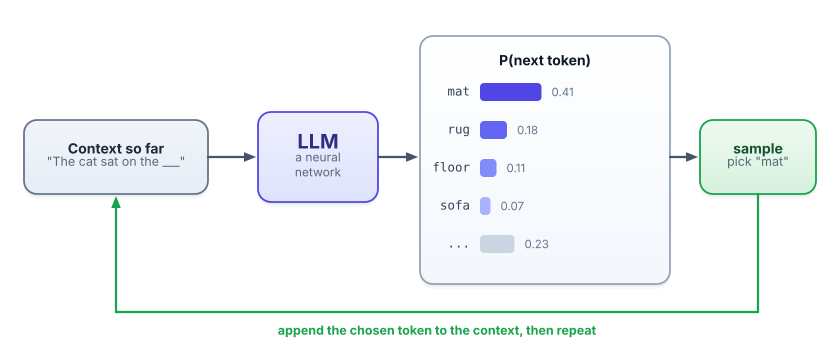
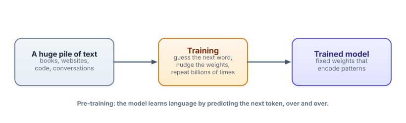

What is a language model?
A language model is a program that guesses what comes next in a piece of text.
You give it some words. It scores every possible next piece, picks one, and adds it on.
Then it does the same again, one small piece at a time, until the answer is done.
Those pieces are called tokens: a whole word or part of a word.
Chat apps such as ChatGPT and Claude run this same guessing game, trained on a huge amount of text.
Think of the phone keyboard that suggests the next word while you text. An LLM is that same game played by a player who has read a huge library, so its suggestions are good enough to finish whole essays one word at a time. It never plans the whole message; it just keeps picking the next suggestion and adding it on.
| In the picture | In the real system |
|---|---|
| The suggestion bar above your phone keyboard | The model's probability for every possible next token |
| Tapping one suggestion | Picking (sampling) one token and adding it to the text |
| Tapping again and again to finish a message | The generation loop: one token per step |
| What the keyboard learned about your writing | The weights learned in pre-training on trillions of words |
Where the picture breaks. A phone keyboard learns from your own texts as you type, while an LLM's weights are frozen after training and learn nothing from your chat.
Going deeper
Almost everything confusing about AI gets clear once you understand the one simple thing these models actually do. It’s not magic, it’s not a search engine, and it’s not a database. It’s a next-word guesser — and that idea, taken seriously, explains the rest of this course.
Why this is the first thing to learn
People assume a large language model “looks up” answers, or “understands” the way a person does. Both assumptions lead you astray — they make hallucinations baffling, prompting feel like superstition, and limits feel arbitrary. The reality is simpler and far more useful to hold in your head: a language model is a machine that, given some text, predicts what text comes next. That’s it. Once that clicks, you can reason about why it behaves the way it does, instead of memorizing rules.
A language model (LM) is a program that takes some text and predicts what comes next. A large language model (LLM) is just a language model with a very large number of internal numbers — its parameters — trained on a very large amount of text. “Large” today means billions of parameters and trillions of words of training text.
The one move: predict the next token
Models don’t read whole words at a time. They read tokens — short chunks of text (a token is roughly a word or a word-piece; we’ll dissect them in the very next lesson). Given the tokens so far, the model outputs a probability for every possible next token in its vocabulary. Not one answer — a ranked distribution over tens of thousands of options.

Then the model (or rather, the program around it) picks one token from that distribution, sticks it onto the end of the text, and runs the whole thing again to get the next one. Doing this repeatedly — each new token feeding back in as input — is called autoregression (“auto” = self, “regression” = predicting from previous values; here, predicting from its own previous outputs). A full essay is nothing more than this single guess, repeated one token at a time.
Give the model the text "The capital of France is". Internally it produces something like:
Paris → 0.92 · a → 0.02 · the → 0.02 · located → 0.01 · (everything else) → 0.03
It’s very confident, so Paris gets picked. Now feed in "The capital of France is Paris" and it might predict , or . next, then maybe which, then is… and a sentence assembles itself. The model never “decided to tell you about France.” It just kept answering “what’s a likely next token?” — and likely-next-token, over and over, looks like knowing the answer.
Assume a support platform drafts 2,000,000 replies a day. Each request carries about 1,500 input tokens (instructions plus the ticket) and each reply is about 300 output tokens. These volumes are assumptions; plug in your own.
- Count the forward passes. Autoregression means one model step per output token. 2,000,000 x 300 = 600 million sequential next-token steps a day, spread across many GPUs.
- Input is read in parallel, output is not. The 1,500 input tokens are processed together in one pass (the "prefill"). The 300 output tokens come one at a time. That is why a long answer feels slow even when the prompt is short.
- Latency per reply. If the serving stack decodes at an assumed 60 tokens/second, 300 tokens take 300 / 60 = 5 seconds. Halve the answer length and you halve the wait.
- Price it. On Claude Sonnet 5.5 at $2 per million input and $10 per million output tokens (Anthropic models overview): input = 2,000,000 x 1,500 = 3 billion tokens = $6,000/day; output = 600 million tokens = $6,000/day. Output is one fifth the token count but costs the same, because each output token is 5x the price.
- The lesson. Every "word" the model writes is one more predict-sample-append step you pay for in time and money. Asking for "a 2-sentence reply" is not just style; it is the cheapest optimisation you have.
Next-token predictor
Pick a starting context and see a realistic distribution over the next token. Notice how the model’s confidence changes with the context.
Where the “knowledge” comes from: training
So how does guessing the next token end up encoding facts, grammar, and reasoning? Through training. The model is shown enormous amounts of text and, for each spot, asked to predict the next token. When it’s wrong, an algorithm nudges its parameters slightly so it would be a little less wrong next time. Repeat across trillions of tokens and billions of tiny adjustments, and the parameters gradually come to encode the patterns of language — and, as a side effect, a great deal of the knowledge expressed in that language.

This trick — using the data’s own continuation as the right answer — is called self-supervised learning. It’s the reason training can scale to the entire web: nobody has to hand-label examples. The end product is a fixed set of numbers (the weights, another word for parameters). At that point the model is frozen; running it to generate text is called inference, and it doesn’t learn anything new while doing so.
Because the knowledge is baked into frozen weights at training time, the model has a knowledge cutoff: it knows nothing that happened after its training data ends, and it doesn’t “remember” your previous conversations unless that text is fed back into it. Hold onto this — it explains a lot in Tracks 3 (RAG) and 4 (agents).
Why ChatGPT feels different from a “next-word guesser”
A model fresh out of pre-training (a base model) just continues text — give it a question and it might continue with more questions, because that’s a plausible continuation of a document. To make it a helpful assistant that follows instructions, model builders add a second phase: they fine-tune it on examples of instructions-and-good-responses, and further shape it using human preferences. The result is an instruction-tuned or chat model. We’ll go deep on how that works in Track 5; for now just know the assistant you talk to is a base next-token predictor that’s been taught manners.
- An LLM does one thing: given the tokens so far, output a probability for every possible next token.
- It generates text by sampling one token, appending it, and repeating — that loop is autoregression.
- It learned by predicting the next token over trillions of words (self-supervised pre-training), which bakes patterns and knowledge into frozen weights.
- Frozen weights ⇒ a knowledge cutoff and no memory of past chats unless that text is supplied again.
- Chat assistants are base models instruction-tuned to follow directions — same engine, better manners.
You ask an LLM, “What did I tell you my name was yesterday?” and it confidently makes up a name. From what you now know, why?
At its core, what is a large language model doing when it 'writes'?
A base model (no instruction tuning) is given the prompt 'What is the capital of Japan?' and replies 'What is the capital of China? What is the capital of Korea?'. Why?
1. In your own words, explain why generating a 300-word answer is “the same operation done ~400 times.”
2. A friend says “The model looked up that Paris is the capital of France.” Correct them precisely.
3. Predict: for the context "The mitochondria is the powerhouse of the", will the model be very confident or unsure about the next token? Why?
▸ Show solutions & reasoning
1. Each token is one forward pass that yields a probability distribution; you sample a token, append it, and feed the longer text back in. A 300-word answer is roughly 400 tokens, so it’s that single predict-sample-append step repeated ~400 times. There’s no separate “planning the whole answer” step — coherence emerges from each step conditioning on everything generated so far.
2. It didn’t “look up” anything. During training it saw “capital of France is Paris” in countless forms, which shaped its weights so that, given that context, Paris has overwhelmingly high next-token probability. At inference it computes that probability and samples — no database, no retrieval, just learned likelihood.
3. Very confident. “the powerhouse of the cell” is an extremely common phrase in training text, so cell will dominate the next-token distribution — a near-deterministic continuation. Contrast that with “I can’t decide what to have for ___,” where many continuations are equally plausible and the model is far less certain. Confidence is just how peaked the distribution is.
It’s fair to be skeptical that something so simple could write code or pass exams. Here’s the intuition for why it works. To predict the next token well across all of human text, a model is pushed to internalize whatever structure makes text predictable: grammar, of course, but also facts (“the capital of France is ___”), arithmetic patterns, the rules of chess notation, the shape of a valid Python function, even the gist of an argument (“therefore, ___”). Getting the next token right at scale requires capturing these regularities. So “mere” prediction, pushed hard enough, produces something that behaves a lot like understanding for many tasks.
But the same lens shows the limits. The model optimizes for plausible, not true. When a fluent continuation and a correct continuation diverge — an obscure fact, a fresh event, a tricky calculation — it will happily produce the fluent one. That’s hallucination, and it’s not a glitch bolted on; it’s the flip side of the very mechanism that makes the model powerful. Much of this course — grounding with RAG, tool use, evals, guardrails — is about systematically closing the gap between “plausible” and “true.”
labs/01_generate_and_sample.pyFree and offline once set up: Ollama with qwen2.5:7b, plus the packages in labs/README.md. From the course folder:
python labs/01_generate_and_sample.pyWhat to look for: Section 5 streams a reply and prints time-to-first-token, total time, the number of streamed chunks and decode tokens/s; section 4 prints prompt_eval_count (input tokens, read in one pass) and eval_count (output tokens, generated one at a time). To feel autoregression, edit the streaming prompt to ask for a reply twice as long: total time grows roughly with eval_count while time-to-first-token barely moves.
Small samples: these labs use 5 to 20 cases so they run in minutes on a laptop. Where they report a rate, they print n and a 95% Wilson interval. Read them as a demonstration of the mechanism, not as a measured rate for your system; for that you need hundreds of cases and several seeds.
▸ Recorded output (our run, 2026-11-03, qwen2.5:7b on a laptop GPU)
2) Same prompt, temperature 1.0, three different seeds
seed=1: Bengaluru in July typically experiences warm to hot temperatures with occasional thunderstorms.
seed=2: Bengaluru in July typically experiences hot and humid weather with occasional thunderstorms.
seed=3: Bengaluru in July typically experiences hot and dry weather with temperatures often soaring above 30°C.
distinct outputs at T=1.0: 3 (sampling -> usually 2-3)
3) Same seed twice at T=1.0 -> reproducible on the same machine
identical: True
4) Tokens are what you pay for: prompt vs output token counts
short prompt: prompt_tokens= 36 output_tokens= 2 prefill_s= 0.52 answer='Paris'
long prompt : prompt_tokens= 639 output_tokens= 2 prefill_s= 0.22 answer='Paris'
Look: the long prompt costs many more input tokens and more prefill time for the same answer.
5) Streaming: time-to-first-token (TTFT) vs total time
TTFT=0.36s total=2.54s chunks=16 decode_tokens_per_s=7.3
Look: streaming does not make generation faster; it shows the first words sooner.Your numbers will differ a little run to run. Full log: labs/outputs. Source: labs/01_generate_and_sample.py.
Warm-up. A model writes a 600-token answer. How many times did it run the predict-sample-append loop, and how many times did it read your 2,000-token prompt from scratch if it uses a KV cache?
▸ Solution
It ran the loop 600 times, once per output token. With a KV cache (the standard trick of storing each token's attention keys and values) the 2,000-token prompt is processed once up front; each new step only computes the newest token and reuses the cached rest. Without a cache it would reprocess the growing text every step, which is why every serving stack caches.
Transfer. Your product manager wants the bot to 'remember' a customer's preferences between sessions. Using only what this lesson taught, explain what has to happen in the system, and why retraining the model nightly is the wrong first idea.
▸ Solution
The weights are frozen at inference, so memory has to live outside the model: store the preferences in a database and put them back into the prompt at the start of each session (or retrieve them when relevant). Nightly retraining is slow, expensive, mixes one customer's data into a shared model, and still would not guarantee recall of a specific fact. Supplying text in the context is cheap, exact, and per-user.
Stretch. Estimate how much text a model sees in pre-training versus what one person reads in a lifetime. Assume 15 trillion training tokens, 0.75 words per token, a reader doing 300 words/minute for 1 hour a day for 60 years. What does the ratio tell you about why the model knows so much and still makes things up?
▸ Solution
Training: 15e12 x 0.75 = about 11 trillion words. Person: 300 x 60 x 365 x 60 = about 394 million words. Ratio is roughly 28,000 lifetimes of reading. That breadth is why it can continue text on almost any topic. But it learned to produce likely text, not to keep a checked list of facts, so on rare or recent facts the likely continuation and the true one can split apart. Scale buys coverage, not a truth check. (The 15T figure is an assumption for the exercise; labs publish different numbers per model.)
Junior Explain what an LLM does when it generates a response, to a non-technical stakeholder.
▸ Model answer
It looks at all the text so far and gives every possible next token a probability. The program picks one token, adds it to the text, and asks again. It repeats that until it hits a stop signal or a length limit. That loop is called autoregression. The model is not searching a database or the web; it is continuing text using patterns learned in training. That is why answers can sound confident and still be wrong, and why we add things like retrieval and checks around it.
Mid What is the difference between a base model and an instruction-tuned model, and when would you choose a base model?
▸ Model answer
A base model is trained only on next-token prediction over raw text, so it continues documents. An instruction-tuned model is then fine-tuned on instruction and response pairs and shaped with human preference data, so it answers questions, follows formats, and refuses some requests. For products you nearly always want the instruction-tuned model. A base model is useful when you want pure continuation (autocomplete, code completion in the middle of a file), when you plan your own fine-tune and do not want an inherited chat style, or for research on what the pre-training learned.
Senior Why are output tokens slower and usually pricier than input tokens, and how does that change how you design a feature?
▸ Model answer
Input tokens are processed in parallel in one prefill pass, which uses the GPU well. Output tokens are produced one at a time, each step depending on the last, so decoding is bound by memory bandwidth and is much less efficient per token. Providers price that in: output often costs several times input. Design consequences: keep answers short and structured, put verbosity limits in the prompt, stream so users see the first tokens early, move long reasoning to cheaper models or batch jobs, cache repeated prefixes, and measure time-to-first-token and tokens/sec separately because they have different causes.
You now know what the engine does. Next, let’s zoom into the fuel it runs on: tokens — what they are, why they’re weird, and why they quietly control your costs and limits.
In one line: A language model is a very well-read guesser that writes one small piece of text at a time.